  <!-- Timeline Start -->
  <div class="container-fluid py-5" style="background-color: #f8f9fa;">
    <div class="container py-5">
      <div class="text-center mx-auto pb-5 wow fadeInUp" data-wow-delay="0.1s" style="max-width: 800px;">
        <h4 class="text-primary">Why Choose UCI India?</h4>
        <h1 class="display-5 mb-4">Focused on understanding your business, we provide IT technology solutions and ongoing support that drive efficiency and protect your operations.</h1>
      </div>
      
      <style>
        .simple-timeline {
          position: relative;
          max-width: 1000px;
          margin: 0 auto;
        }
        
        /* Timeline line */
        .simple-timeline:before {
          content: '';
          position: absolute;
          top: 0;
          bottom: 0;
          width: 3px;
          background: #2B3990;
          left: 50%;
          margin-left: -1.5px;
        }
        
        /* Timeline items */
        .timeline-item {
          position: relative;
          margin-bottom: 50px;
          width: 50%;
          padding: 0 40px;
        }
        
        /* Left items */
        .timeline-item:nth-child(odd) {
          left: 0;
          text-align: right;
        }
        
        /* Right items */
        .timeline-item:nth-child(even) {
          left: 50%;
          text-align: left;
        }
        
        /* Timeline dots */
        .timeline-item:after {
          content: '';
          position: absolute;
          width: 12px;
          height: 12px;
          right: -46px;
          background: #2B3990;
          border: 3px solid #fff;
          top: 20px;
          border-radius: 50%;
          z-index: 1;
        }
        
        .timeline-item:nth-child(even):after {
          left: -46px;
        }
        
        /* Content box */
        .timeline-content {
          background: white;
          padding: 25px;
          border-radius: 8px;
          box-shadow: 0 3px 10px rgba(0,0,0,0.1);
          position: relative;
        }
        
        /* Content arrow */
        .timeline-item:nth-child(odd) .timeline-content:after {
          content: '';
          position: absolute;
          top: 20px;
          right: -10px;
          width: 0;
          height: 0;
          border: 10px solid transparent;
          border-left-color: white;
        }
        
        .timeline-item:nth-child(even) .timeline-content:after {
          content: '';
          position: absolute;
          top: 20px;
          left: -10px;
          width: 0;
          height: 0;
          border: 10px solid transparent;
          border-right-color: white;
        }
        
        /* Image outside */
        .timeline-image {
          position: absolute;
          width: 80px;
          height: 80px;
          border-radius: 50%;
          background: #f8f9fa;
          border: 3px solid #2B3990;
          display: flex;
          align-items: center;
          justify-content: center;
          z-index: 2;
        }
        
        .timeline-image img {
          max-width: 50px;
          max-height: 50px;
          object-fit: contain;
        }
        
        /* Left side image (right of content) */
        .timeline-item:nth-child(odd) .timeline-image {
          right: -80px;
          top: 10px;
        }
        
        /* Right side image (left of content) */
        .timeline-item:nth-child(even) .timeline-image {
          left: -80px;
          top: 10px;
        }
        
        /* Mobile responsive */
        @media (max-width: 768px) {
          .simple-timeline:before {
            left: 40px;
          }
          
          .timeline-item {
            width: 100%;
            left: 0 !important;
            padding-left: 100px;
            padding-right: 20px;
            text-align: left !important;
          }
          
          .timeline-item:after {
            left: 34px !important;
            right: auto !important;
          }
          
          .timeline-content:after {
            display: none;
          }
          
          .timeline-image {
            left: -20px !important;
            top: 10px !important;
            width: 60px;
            height: 60px;
          }
          
          .timeline-image img {
            max-width: 35px;
            max-height: 35px;
          }
        }
      </style>
      
      <div class="simple-timeline">
        <div class="timeline-item">
          <div class="timeline-content">
            <h4>Business-Aligned Tech Strategy</h4>
            <p>We customize technology solutions to fit your business goals, focusing on growth, efficiency, and lasting success.</p>
          </div>
          <div class="timeline-image">
            
          </div>
        </div>
        
        <div class="timeline-item">
          <div class="timeline-content">
            <h4>Cloud and System Experts</h4>
            <p>Our professionals design and manage cloud and IT systems to deliver reliable, efficient operations with minimal downtime.</p>
          </div>
          <div class="timeline-image">
            
          </div>
        </div>
        
        <div class="timeline-item">
          <div class="timeline-content">
            <h4>Scalable Execution Models</h4>
            <p>Our flexible execution options grow with your business, adjusting smoothly to your changing needs without disruption.</p>
          </div>
          <div class="timeline-image">
            
          </div>
        </div>
        
        <div class="timeline-item">
          <div class="timeline-content">
            <h4>Ongoing Support and Optimization</h4>
            <p>We offer continuous monitoring and maintenance to keep your systems running smoothly with proactive support.</p>
          </div>
          <div class="timeline-image">
            
          </div>
        </div>
        
        <div class="timeline-item">
          <div class="timeline-content">
            <h4>Strong Focus on Performance and Security</h4>
            <p>We prioritize reliable system performance alongside strong data protection for uninterrupted business operations.</p>
          </div>
          <div class="timeline-image">
            
          </div>
        </div>
      </div>
    </div>
  </div>
  <!-- Timeline End -->